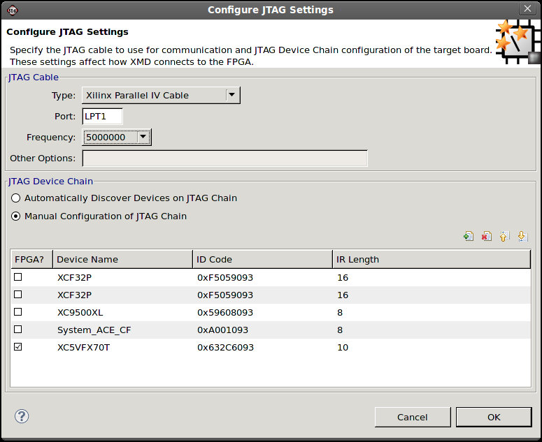

JTAG settings
Embedded hardware components
Programming parallel Flash overview
In the Configure JTAG Settings dialog box, specify the JTAG cable to use for communication and
the JTAG Device Chain information for the board.
To open the
Configure JTAG Settings dialog box, select Xilinx Tools > Configure JTAG Settings.

The Configure JTAG Settings dialog box contains the following functions.
| Name | Function |
|---|---|
| JTAG Cable | Specify the JTAG Cable settings. |
|
Specify the Cable type. The default is "auto". |
|
Specify the port on the host machine where the cable is connected. |
|
Specify the frequency to run the cable. |
|
Specify the cable name and arguments for third party cable
types in this field. Specify the full cable option: |
| JTAG Device Chain | Specify the JTAG Device chain information for the board. |
| Automatically Discover Devices on JTAG Chain | Use this option for SDK to automatically detect the devices in the chain. This is recommended for most users. |
| Maunal Configuration | Use this option if the auto-discover failed. |
|
Specify the FPGA device for communication by SDK. |
|
Name of the Device. |
|
The JTAG ID code of the device. |
|
The JTAG IR Length of the device. |
| Add/Delete/Move Up/Down | Use these options to specify the devices in the chain. |

JTAG settings
Embedded hardware components
Programming parallel Flash overview

Configuring the JTAG settings
Programming the FPGA
Programming parallel Flash memory
Debugging a program
Copyright © 1995-2013 Xilinx, Inc. All rights reserved.